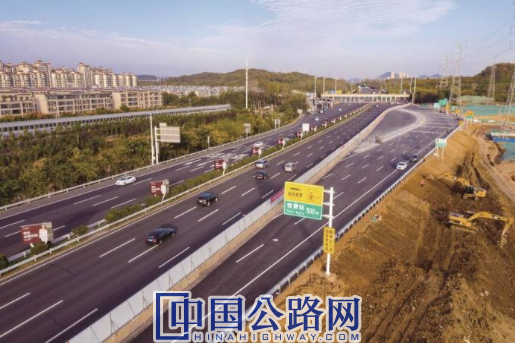

微官网
微官网
2020-11-18 新华日报 作者：梅剑飞 朱 璇

日前，南京栖霞区马高路北延道路关键节点——沪宁保通路通过交工验收并投入使用。杨 亚 赵亚玲摄
20多年来，江苏经济快速增长，带动了全省高速公路交通量以年均25.3%的速度增长。自1996年第一条高速公路——沪宁高速公路江苏段建成通车以来，江苏高速公路路网密度位居全国前列。当前，我省高速公路养护管理工作面临诸多问题和挑战，路龄长、老化现象较为明显。截至目前，路面使用时间超过15年设计寿命的高速公路里程占比46%，路面使用时间达10年及以上的高速公路里程占比76%，货车及重载比例高，对高速公路设施的损伤影响大。
“建设是发展，养护管理也是发展，而且是可持续发展。”江苏交通控股有限公司董事长蔡任杰表示，当前，江苏高速公路养护管理已经实现了技术创新由被动接受向主动研究转变、养护管理由粗放向精细转变、养护决策由经验向科学转变、管理视野由项目级向路网级转变、质量控制由事后向事中转变，基于系统性和持续性的养护实践，逐步形成具有江苏特色的高速公路“苏式养护”品牌，保障了江苏高速公路网络“安全、畅通、便捷、高效、经济与和谐”。
12日，记者在沪宁高速无锡养排工区，看到一对合作无间的“检测医生”——高动态雷达和连续激光弯沉仪。它们分别负责在快速行驶过程中全面连续、快速无损地完成对路面结构内部损伤的检测和路面抵抗车轮不利作用能力的检测，将检测结果综合起来，就能对路面结构的健康状况进行全方位评估。这是江苏在全国首创的路面结构健康状态快速无损检测诊断技术。
“该技术类似于中西医结合会诊，高动态探地雷达就似西医的CT扫描，可以直观观察路面结构内部损伤。而连续式激光高速弯沉仪就似中医的把脉式诊断，判断路面结构对车轮的抵抗力——结构强度状况。”江苏交控总工程师、工程技术部部长吴赞平介绍，由此建立的一套综合评价指标，为路面科学养护提供了设计依据。目前沪宁、沿江、沿海等江苏20多条高速都应用了该项技术，累计使用道路3300公里。
除了检测车外，在无锡养排工区的车库里，还整齐停放着各种道路养护车辆，工区广场中央的停机坪上，一架用于快速救援的直升机正在进行日常维护。“一年上路作业养护量达到2000多起，在现有路况条件下，我们一直在探索多举措高效率护路保畅。”无锡养排工区主任平成介绍，沪宁高速无锡枢纽到苏锡交界段的25公里道路，为G2与G42两条交通大动脉的复合地段，日均车流量19万辆次，远超设计流量的11.5万辆次，超负荷的繁忙给养护带来了巨大压力。
今年5月，沪宁高速苏州段养护施工采用了“单向全封闭”集中养护新模式。“高速公路这种长距离全封闭集中养护在全国尚属首次。”江苏交控副总经理陈金东介绍，我省首创的这一“集中养护”模式，通过科学组织大流量下同一路段内多项目、多工种同步交叉实施，达到“管理时间最短、交通影响最小、养护效率最高、工程质量最优、安全风险最低、社会反响最好”的养护效果。
今年以来，沪宁高速、汾灌高速等多条高速公路分别实施了集中养护工程。经最新测算，沪宁苏州段集中养护工程工期，由传统分散间断的200天压缩至连续集中的10天，大幅度减少了养护对交通的影响，取得社会经济效益2.8亿元，综合效益约为传统养护的10倍以上。
“十三五”以来，在交通运输部组织的3次全国干线公路养护管理检查中，江苏高速公路养护管理水平始终位居全国前列，以“高质量、长寿命、可持续、稳发展”为愿景，具有鲜明江苏特色的“苏式养护”品牌，为全国高速公路行业提供了有益借鉴。